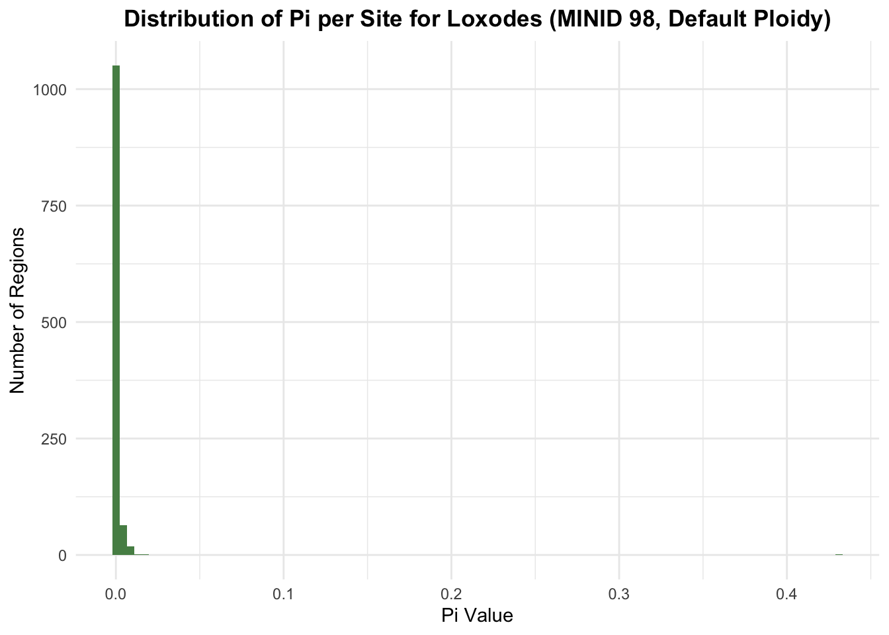
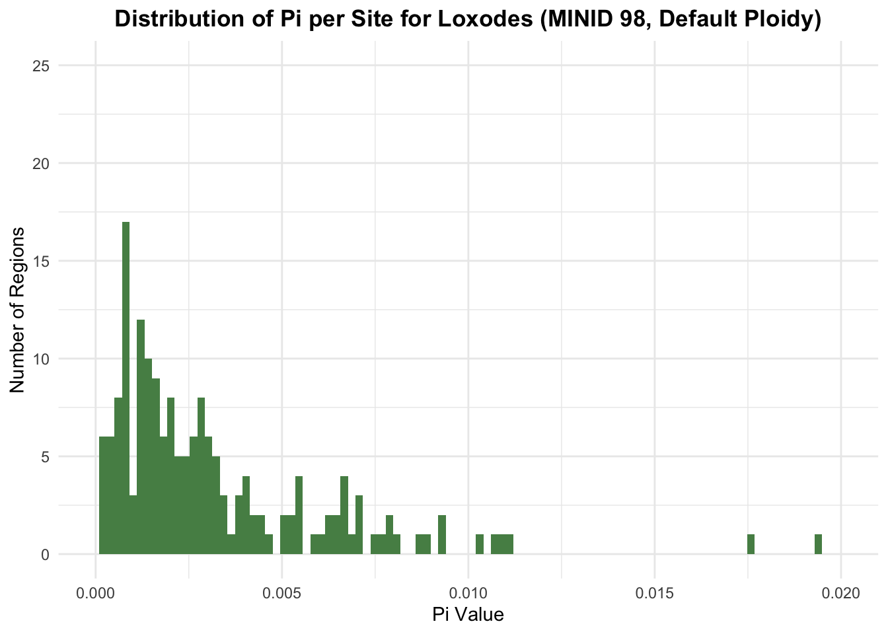

Loading the needed libraries and reading in the vcf as a vcfR object.
library(tidyverse)
library(vcfR)
library(PopGenome)To work with PopGenome, we need to split the vcf into scaffolds. You’ll only need to run the VCF_split_into_scaffolds function once for a vcf file.
Then, we use the readData function to read the scaffolds into the format used by PopGenome. This will take a while.
#only run the following function once
#VCF_split_into_scaffolds("./Data/loxodes_pooled/all_filtered_98.vcf", "popgen_scaffolds")
lox_pooled_98 <- readData("./popgen_scaffolds", format = "VCF")We can use the following function to plot the distribution of pi_per_site values.
#this function takes the mandatory argument the SNP data generated by the readData function, the optional argument sample_name (information you want included in the title), and the optional argument fill.
#plots the per site pi values for the given data
plot_pi <- function(genome, sample_name = "", fill = "#3287a8") {
genome <- diversity.stats(genome, keep.site.info = TRUE, pi = TRUE)
pi <- genome@Pi
pi_per_site <- pi / genome@n.sites
pi_per_site <- pi_per_site %>% as_tibble() %>% rename(Pi = `pop 1`)
pi_per_site %>% ggplot() +
geom_histogram(aes(x = Pi), fill = fill, bins = 100) +
labs(title = paste("Distribution of Pi per Site for", sample_name), x = "Pi Value", y = "Number of Regions") +
theme_minimal() +
theme(plot.title = element_text(face="bold", hjust = .5))
}Here is a call to the function with the Loxodes data.
plot_pi(lox_pooled_98,
sample_name = "Loxodes (MINID 98, Default Ploidy)",
fill = "#568D55") ## | : | : | 100 %
## |===================================================| ;-)
We can remove regions with very low Pi values to better see the distribution of higher Pi values.
plot_pi(lox_pooled_98,
sample_name = "Loxodes (MINID 98, Default Ploidy)",
fill = "#568D55") +
scale_x_continuous(limits = c(0, .02),
breaks = seq(0, .02, by = .005)) +
ylim(0, 25) ## | : | : | 100 %
## |===================================================| ;-)